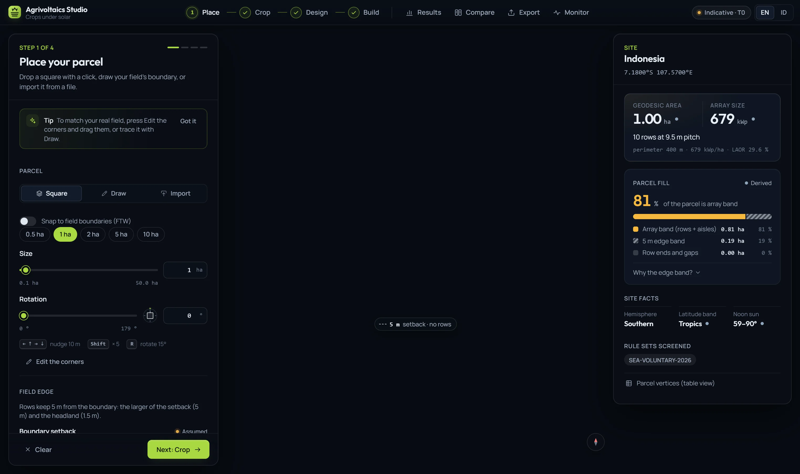

01Place · Lokasi
Start from the real field
Drop a square, trace the boundary corner by corner, or import the file you already have. Set the headland and per-edge setbacks; the site panel shows what fraction of the parcel the array can use, and which rule sets apply.
- Import
- GeoJSON · KML · KMZ · Shapefile · CSV
- Projections
- UTM · TM-3 · Lo · Web Mercator
- Screen a district
- up to 100 km² · 7 factors
